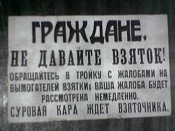

Президент Медведев выступил с традиционным обращением к Федеральному собранию, в котором проговорил тренды, по которым должно развиваться наша страна в будущем, 2011 году.
Много правильных слов говорил про детей, про интернаты, которые «скорее занимаются изоляцией, чем социализацией детей». Много обычных слов говорил про инновации. Уже освоившие айпэды чиновники одобряли.
Остановился и на привычном для России вопросе коррупции. Президент высказал предложение заменить наказание за получение взятки в виде лишения свободы штрафом, который будет равен 100 полученным взяткам.

Другими словами, чиновник, получивший, к примеру от предпринимателя 50 000 рублей, должен будет заплатить государству целых 5 000 000. Где чиновнику эти 5 млн. рублей взять я примерно представляю.